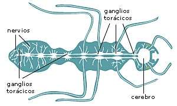

Invertebrados
¿Qué son los Antrópodos?
Origen
Los artrópodos constituyen el filo más numeroso y diverso del reino animal (Animalia). El grupo incluye animales invertebrados dotados de un esqueleto externo y apéndices articulados; los insectos, arácnidos, crustáceos y miriápodos, entre otros.
Hay más de 1 300 000 especies descritas, en su mayoría insectos (estimados entre 941 000 a 1 000 000 de especies), que representan al menos el 80 % de todas las especies animales conocidas. Son importantes miembros de ecosistemas marinos, de agua dulce, terrestres y aéreos. Varios grupos de artrópodos están perfectamente adaptados a la vida en ambientes secos, al igual que los vertebrados amniotas y a diferencia de todos los demás filos de animales, que son acuáticos o requieren ambientes húmedos.
Los artrópodos fueron clasificados tradicionalmente junto con los anélidos dentro del clado Articulata. Por lo tanto, se creía que los primeros artrópodos podrían haber sido similares a los anélidos; aunque dado que los restos fósiles de anélidos eran poco comunes, la clasificación de los artrópodos en Articulata estaba basada principalmente en similitudes morfológicas.
El amplio registro fósil de los artrópodos y los análisis moleculares descartan la agrupación en Articulata, incluyendo a los artrópodos en el clado Ecdysozoa y a los anélidos en Spiralia. Actualmente se piensa que los primeros artrópodos fueron animales pequeños, segmentados y con apéndices, denominados lobópodos. Se cree que estos animales, entre otros grupos de clasificación incierta, representan varios taxones del grupo troncal del filo Arthropoda.

Características de los Antrópodos
- Presencia de un esqueleto externo o exoesqueleto quitinoso que mudan periódicamente. Dado que diversos filos pseudocelomados también mudan la cutícula, algunos autores relacionan a los artrópodos con los nematodos y grupos afines, en un clado llamado Ecdysozoa.
- Cuerpo constituido por segmentos repetitivos, fenómeno conocido como metamería, con lo que el cuerpo aparece construido por módulos repetidos a lo largo del eje antero-posterior. La segmentación va acompañada de regionalización o tagmatización, con división del cuerpo en dos o tres regiones en la mayoría de los casos. Por este carácter se les ha relacionado tradicionalmente con los anélidos que también son animales metamerizados; pero los defensores del clado Ecdysozoa argumentan que es un caso de convergencia evolutiva (véase Articulata y Ecdysozoa, y en este mismo artículo el apartado Filogenia).
- Presencia de apéndices articulados que muestran una plasticidad evolutiva enorme y que han dado lugar a las estructuras más diversas (patas, antenas, branquias, pulmones, mandíbulas, quelíceros, etc.).
.jpg)
Anatomía
Exoesqueleto
El exoesqueleto de los artrópodos es una cubierta continua llamada cutícula, que se extiende incluso por los dos extremos del tubo digestivo y por las vías o cavidades respiratorias, y que está situada por encima de la epidermis (llamada en estos por ese motivo hipodermis), que es la que la secreta.
La composición del exoesqueleto es glucopeptídica (con una parte glucídica y una parte peptídica). El componente principal y más característico pertenece al primero de estos dos tipos, y es la quitina, un polisacárido derivado del aminoazúcar N-acetil-2-D-glucosamina que se encuentra también, por ejemplo, en la pared celular de los hongos. En muchos casos la consistencia del exoesqueleto gana por el añadido de sustancias minerales, como en el caso de los cangrejos y otros crustáceos decápodos cuya cutícula aparece calcificada, por depósito de carbonato cálcico.
El espesor y dureza de la cutícula no es igual en toda su extensión. Por el contrario, aparece formando zonas endurecidas llamadas escleritos, separadas o unidas entre sí por zonas más delgadas y flexibles. Los escleritos reciben denominaciones complejas que varían en cada grupo, pero de manera general se denominan terguitos a los de ubicación dorsal; esternitos, los de ubicación ventral; y pleuritos, los laterales. Pueden existir además crestas del exoesqueleto desarrolladas hacia adentro llamadas apodemas y otras llamadas apófisis, ambas invaginaciones de la pared del cuerpo, que forman procesos rígidos que sirven para la inserción de músculos y para dar fortaleza o rigidez al exoesqueleto.
Ecdisis
El esqueleto externo tiene una desventaja y es que, para poder crecer, el animal debe desprenderse de él. Lo hace en un proceso, controlado hormonalmente, de ecdisis o muda. La hipodermis secreta enzimas que ablandan y digieren en parte la capa más inferior de la cutícula (la endocutícula), provocando que el resto se desprenda. Inmediatamente comienza la secreción de una cutícula nueva, primero la epicutícula y luego, debajo de ella, la procutícula. Hasta que se endurece esta nueva cubierta el animal está relativamente indefenso, con menos posibilidad de escapar o resistirse. Todo el proceso de la muda está controlado hormonalmente; la ecdisona u «hormona de la muda» es la sustancia responsable de que estos cambios se produzcan. Se llaman estadios o instares a las sucesivas fases de la existencia del animal entre muda y muda. Este rasgo lo comparten los artrópodos con algunos otros filos, como los nemátodos que también tienen una cutícula y mudan.
.jpg)
Apéndices
Los apéndices son expansiones articuladas del exoesqueleto, en cuyo interior se sitúan los músculos estriados que, adheridos a las articulaciones, les proporcionan versatilidad y rapidez de movimientos. Se llama artejos (voz que deriva del latín artículo, ‘articulado’) a las piezas articuladas que forman los apéndices.
Existen dos tipos básicos de apéndices, los unirrámeos, formados por un solo eje, propios de los artrópodos terrestres (arácnidos, miriápodos e insectos); y los birrámeos formados por dos ejes y propios de los artrópodos acuáticos (trilobites y crustáceos). No hay acuerdo sobre cuál fue el apéndice ancestral.
En el curso de la evolución ha existido la tendencia a restringir los apéndices a determinadas regiones del cuerpo y a especializarlos para funciones distintas. Los apéndices de la cabeza están adaptados para la percepción sensorial, la defensa y para manipular los alimentos; los del tórax sirven para la locomoción y natación; los abdominales cumplen funciones respiratorias y reproductoras, como retener los huevos o aferrarse a la pareja durante la cópula. Otros se han modificado de tal modo que cuesta reconocerlos como tales (hileras de las arañas, peines de los escorpiones).
Respiración
Muchos artrópodos son demasiado pequeños como para tener o necesitar órganos respiratorios. Los artrópodos acuáticos suelen presentar branquias, apéndices internamente más vascularizados que los otros órganos. Se encuentran en los crustáceos, como especializaciones de la rama dorsal de los apéndices torácicos, y de la misma manera en los xifosuros o en los euriptéridos o los primeros escorpiones fósiles. También se encuentran branquias secundarias (derivadas de las tráqueas) en las larvas acuáticas de algunos insectos, como las efímeras.
Como es general en los animales, los miembros del grupo de vida aérea respiran por órganos internalizados, que en los artrópodos pueden ser de dos tipos:
- Tráqueas: Los insectos, algunos órdenes de arácnidos, los miriápodos y las cochinillas de la humedad (crustáceos adaptados a la vida terrestre) presentan una red de conductos que comunican con el exterior por orificios llamados espiráculos, frecuentemente dotados de aberturas provistas de válvulas que regulan su diámetro. La cutícula en estas estructuras es muy delgada y permeable, que en todo caso se desprende cuando llega la muda. En algunos casos se observa una ventilación activa, con movimientos cíclicos de inspiración y espiración.
- Pulmones en libro: Presentan una estructura interna muy plegada, lo que multiplica la superficie por la que se realiza el intercambio de gases, y se abren al exterior por aberturas propias e independientes. Se encuentran pulmones en libro en varios órdenes de arácnidos, entre los que destacan las arañas y los escorpiones.
Circulación
El aparato circulatorio de los artrópodos es abierto, es decir, no existe un circuito cerrado de vasos por el que circule un líquido diferenciado, lo que propiamente se podría llamar sangre. Lo que existe es un vaso especializado que recorre longitudinalmente gran parte del cuerpo llamado corazón dorsal. Al contraerse dicho órgano, mueve el líquido corporal interno: la hemolinfa, que recibe de vasos posteriores abiertos e impulsa hacia adelante por vasos igualmente abiertos (separados mediante válvulas). El tramo del vaso que se encuentra conectado al cerebro se denomina aorta, en el cual irriga directamente la cavidad cerebral y los órganos cercanos a este para luego retornar a la red de vasos y llegar nuevamente al corazón dorsal. La hemolinfa llega a las extremidades a través de bombas musculares que, con la ayuda de contracciones musculares, actúan como «corazones auxiliares» permitiendo al fluido circulatorio alcanzar aquella zona del cuerpo.
La red de vasos está siempre escasamente desarrollada, salvo en las branquias de los artrópodos acuáticos. No hay células sanguíneas especializadas en el transporte de oxígeno, aunque, como en todos los animales existen amebocitos (células ameboideas) con funciones de inmunidad celular y hemostasis (coagulación y cicatrización). Sí puede haber pigmentos respiratorios, pero disueltos en la hemolinfa.
Excreción
Los crustáceos presentan para la excreción glándulas antenales y maxilares, en la base de esos apéndices. Los arácnidos suelen disponer de glándulas coxales, que desembocan en la base de las patas locomotoras. En insectos y en miriápodos aparecen órganos tubulares característicos, llamados tubos o conductos de Malpighi, que desembocan entre el intestino medio y el intestino posterior (proctodeo); sus productos se suman a la composición de las heces.
Los artrópodos terrestres suelen ser uricotélicos, es decir, que para la excreción nitrogenada no producen amoníaco o urea, sino ácido úrico o, a veces, guanina.
En los artrópodos es frecuente la excreción por acumulación, como alternativa o complemento de la excreción por secreción. En este caso se acumulan los productos de excreción en nefrocitos, células pericárdicas o directamente en la cutícula. La acumulación suele ser de uratos o guanina, bases nitrogenadas muy poco solubles que forman depósitos sólidos. En este último caso las mudas sirven para la función añadida de librarse de esas excretas.
Reproducción
Sistema nervioso
En la reproducción sexual, las hembras, tras ser fecundadas por los machos, ponen huevos. El desarrollo, a partir del huevo, puede ser directo o indirecto.
- En el desarrollo directo nace un individuo similar al adulto, aunque, como es lógico, de menor tamaño.
- En el desarrollo indirecto nace una larva, lo que implica una serie de cambios profundos denominados metamorfosis.
Se dan frecuentes casos de partenogénesis (la hembra produce un cigoto sin haber sido fecundada), sobre todo en crustáceos e insectos. También hay casos de reproducción por embriogénesis que es uno de los tipos de fragmentación donde las larvas, estados jóvenes o embrionarios se dividen en nuevos individuos.
Como corresponde a los protóstomos, el sistema nervioso se desarrolla en el lado ventral del cuerpo, y como corresponde a animales metaméricos, su organización es segmentaria. En cada segmento aparece un par de ganglios, de posición más o menos ventrolateral, con los dos ganglios de un par soldados o unidos por una comisura transversal y los de pares consecutivos unidos por nervios conectivos.
Sistema nervioso central
En los artrópodos es un órgano de tipo anelidiano, por tanto, tiene una estructura primariamente en forma de escalera de cuerda, o sea, dos cordones nerviosos longitudinales que recorren la parte ventral del cuerpo, con un par de ganglios por metámero unidos transversalmente por comisuras; no obstante, se producen procesos de concentración de ganglios debidos a la formación de tagmas.